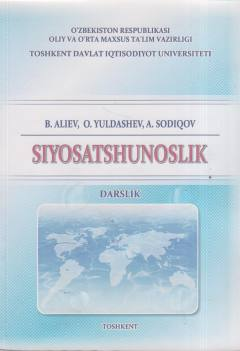

SSiyosatshunoslik fanining nazariy va amaliy asoslarini yorituvchi oliy ta'lim darsligi.
Ushbu darslik O'zbekiston oliy o'quv yurtlari uchun mo'ljallangan bo'lib, siyosatshunoslik fanining nazariy asoslari, siyosiy tizimlar, davlat hokimiyati va xalqaro munosabatlar masalalarini qamrab oladi. Kitobda siyosiy madaniyat, partiyalar faoliyati va zamonaviy siyosiy jarayonlarning o'ziga xos xususiyatlari ilmiy tahlil qilingan.